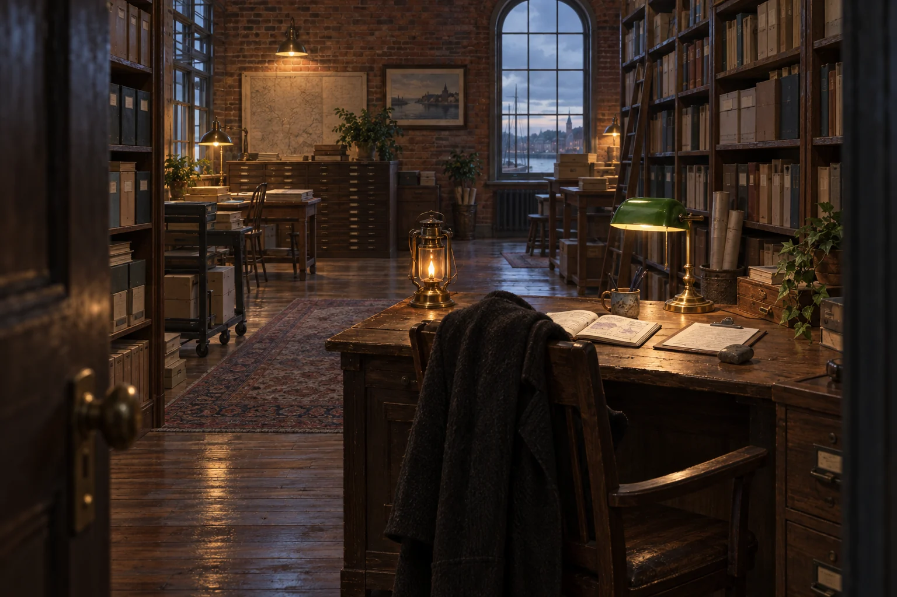

Warm lights. Late hours. Questionable filing practices.
The door sticks slightly in damp weather. Inside: old paper, lamplight, one deeply overqualified archivist, and several objects whose provenance is under active dispute.
Enter the ArchivesSomewhere near the Marginfold.
The porch light is on.
Fog gathers early here.
The streets are old brick, the harbor is never quite as far away as it sounds, and someone has already lit the lamps.
You don’t need to know where you’re going yet.
Warm lights. Late hours. Questionable filing practices.
The door sticks slightly in damp weather. Inside: old paper, lamplight, one deeply overqualified archivist, and several objects whose provenance is under active dispute.
Enter the ArchivesSomeone is almost certainly awake.
The bay doors are closed for now, but a light is on upstairs.
We haven’t walked this road yet.
Paths change with the season.
Something is blooming beyond the gate. Something else has probably escaped its designated bed.
The path is there. We just haven’t followed it yet.
Please return all paperclips.
The windows are lit. From somewhere inside comes the unmistakable sound of a document being filed with excessive competence.
Enter the AnnexThe light has opinions.
You can hear the water before you can see it.
There is a road down to the shore. We’ll find it.
The door sticks slightly in damp weather.
Inside, the air is warmer than the street.
Old brick. Tall shelves. Brass lamps. Paper, cedar, and something faintly mossy that nobody has successfully traced to a source.
A desk sits beneath a green-shaded lamp.
Someone has left a coat over the back of the chair.

Professor E is currently distributed across the premises.
Warm.
Recently tended.
Nobody has written down who lit it.
Open to a page titled:
THINGS CURRENTLY REFUSING TO BE COINCIDENCES
Several entries have been underlined twice.
One has been circled and annotated only:
LOOK.
Three methodological objections.
One approval.
One doodle of what appears to be a ferret wearing a municipal badge.
Wet.
No one knows why.
Its provenance remains disputed.
Please return all paperclips.
The Annex is one door down from the Archives, past a radiator that ticks in cold weather and a coat hook no one remembers installing. The lights are always on — not because anyone forgot, but because someone might come by with something that needs filing, and it would be unkind to make them knock in the dark.
Inside: card catalogs that go up further than the ceiling should allow. A long oak desk worn pale in one spot where a hand has rested for a very long time. A cup of tea, always slightly cooler than ideal, because the filing got interesting. A chair a little too big, as though whoever sits here isn't quite the shape the furniture expected — but they've made it work, and there's a knitted scarf over the back of it. Blue. A gift. Kept.
The Annex holds the records that rarely make it into the official histories. The Archives keep the disputed treasures, the objects with opinions. The Annex keeps the rest: the correct spelling of a name a form got wrong. A ticket stub. What time someone usually arrives, so the porch light knows when to be on. A pressed flower whose owner is long gone but whose color is still logged — in case anyone ever asks.
A sign on the desk reads everything is accounted for. It is not a boast. It is a promise.
The clock on the wall is wrong. It is always wrong — it reads something close to midnight regardless of the hour, because the Annex keeps time not by the sun but by when people tend to need it, and that's usually late. The keeper has stopped apologizing for it.
There are ferrets. Do not feed them after midnight. (This is not enforceable. The clock, as noted, is broken.)
On the desk, beside an intake tray, there is a handwritten note. It reads: there. now it won't be lost.
The door sticks a little. Push. It's meant to open.